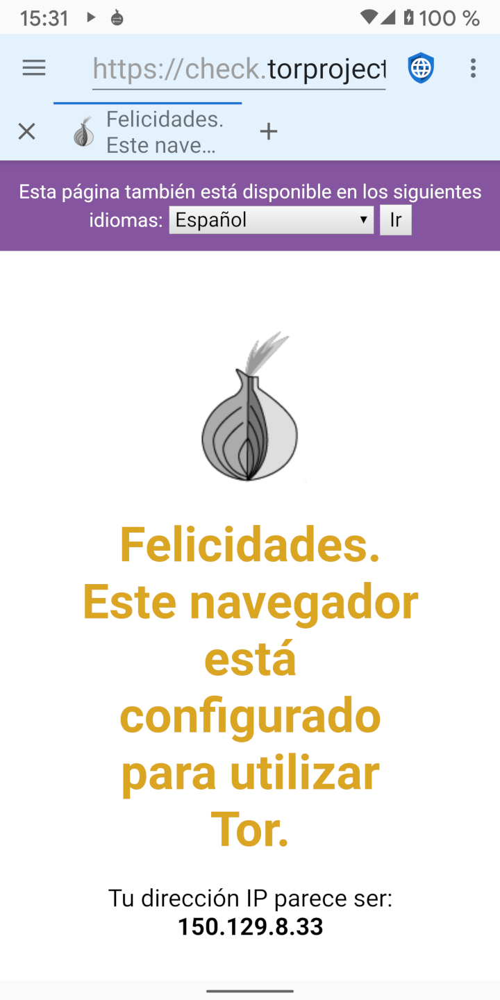

Existen dos categorías generales de malos actores que quieren infringir la privacidad de la web: gobiernos maliciosos con acceso a ISPs (Proveedores de Servicios de Internet) y grandes corporaciones que ofrecen redes sociales y de publicidad. Los proxies como TOR (The Onion Router) e I2P (the Invisible Internet Project) son útiles para proteger la privacidad frente a los gobiernos maliciosos (que espían el tráfico en tránsito) pero no de las mega corporaciones (que incrustan código malicioso en los servidores web).
Los gobiernos maliciosos a menudo espían a sus ciudadanos para castigar la disidencia o la actividad de derechos humanos. Normalmente suelen operar los ISPs locales o los fuerzan a revelar información mostrando cada dirección IP que visita cada usuario. Los proxis en capas están diseñados para derrotar esta violación de la privacidad mediante el cifrado del tráfico del dispositivo de un usuario y su enrutamiento a través de múltiples servidores en Internet antes de enviarlo al destino final. Esto significa que ningún ISP, servidor o sitio web individual puede conocer tanto la dirección IP del dispositivo del usuario como la dirección IP del servidor web final. Los gobiernos malintencionados y los ISP que ellos controlan no pueden saber a qué servidores web está accediendo un usuario, aunque sí pueden saber que el usuario está utilizando un servicio proxy en capas. En algunas partes del mundo, el uso de proxis podría ser interpretado como una evidencia de comportamiento ilegal (“Si no tuvieras nada que ocultar no estarías cifrando tu tráfico”) y los usuarios podrían ser castigados porque los gobiernos asumen que están haciendo algo que está prohibido. Por lo tanto, los proxis pueden ser útiles, pero no son una panacea.
Cuando un usuario se conecta a un servidor web, éste puede ver la dirección IP del usuario. Aunque esto no es una ciencia perfecta, las direcciones IP se pueden convertir a direcciones físicas con bastante precisión. Los pequeños servidores web suelen depender de las direcciones IP para identificar la ubicación de los usuarios que visitan su sitio. Los proxis son una buena solución para enmascarar la ubicación del usuario desde estos servidores. Pero las más grandes corporaciones que poseen medios sociales y redes de publicidad usan un perfil completo de información diseñado para rastrear a los usuarios a través de los dispositivos y direcciones IP. Estos perfiles emplean una variedad de técnicas para identificar a los usuarios, incluyendo Javascript, cookies, IDs de seguimiento, y huellas del navegador. Debido a que la gran mayoría de páginas web en internet, o cargan un anuncio de una de las principales redes, o integran iconos de medios sociales con su Javascript asociado, estas corporaciones han creado perfiles para casi todos los usuarios en línea y pueden rastrear su actividad en internet a través de sitios que no están relacionados.
Ellos rastrean cada sitio web visitado, todo lo que se compra, cada tarjeta de crédito que es usada para realizar una compra, cada dirección a la que se envían los artículos, y los metadatos GPS de cada imagen que se sube a internet. Construyen un perfil de la edad del usuario, género, estado civil, dirección, afiliaciones políticas, afiliaciones religiosas, circunstancias familiares, número de mascotas, y cualquier otra cosa que caiga en sus manos. Incluso compran bases de datos de transacciones con tarjeta de crédito en tiendas locales, para así poder rastrear de los usuarios en sus perfiles los patrones de compra que hacen cuando no están conectados. Debido a que tienen ya una información de dirección mucho más precisa sobre un usuario que la que revela una dirección IP, los proxis no proporcionan ninguna protección real de privacidad contra las mega corporaciones.
La única mejor protección de la privacidad contra las grandes corporaciones es navegar por la web con Javascript deshabilitado, seguido de bloquear redes publicitarias, inhabilitar cookies y almacenamiento DOM, y usar un navegador del que sea difícil recoger huellas.
A pesar de sus limitaciones, los proxis pueden ser útiles en algunas circunstancias. Tor e I2P tienen aplicaciones Android que facilitan el uso de sus redes de proxy. Cuando se activa el proxy en Navegador Privado, la barra de aplicaciones tendrá un fondo azul claro en lugar del gris claro predeterminado. Debido a que el tráfico está siendo enrutado a través de varios nodos proxy, usar un proxy en capas es a menudo mucho más lento que conectarse directamente a Internet.
